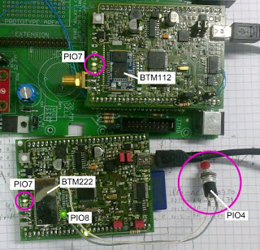

The Sceptre has a Bluetooth module; in fact it was designed for using a
BTM222 or BTM112 Bluetooth module from Rayson. These modules are cheap
and easy to find on the internet. They do have one problem though and
that is the lack of documentation. The official datasheet only shows one
table with AT commands and that’s it. When I did my initial experiments
with the modules, I managed to get them going, but I was never quite
satisfied with how they were working. A few days ago I decided to give
them another go and improve my driver. I spent quite some time googling
and I did find some new information. The official documentation is still
limited to the single table, but now I know that it is incomplete too!
The
BTM222 & BTM112 are part of a large family of modules that are all
very similar. Differences are mainly in TX power and integrated antennas
or not. It is possible to find some more information by studying the
datasheets of the related modules.
Commands not listed in the BTM112/BTM222 dataheet I know of so far are:
+++ – Switch from data mode to command mode (valid only when connected)
AT – Doesn’t do anything but should return “OK”
ATCx, x = [0,1,?] – Flow control (RTS/CTS) disable (0) or enable (1, default)
ATH – Drop current connection (valid only when connected)
ATIx, x = [0,1,2,?] – Information, 0: firmware version, 1: current settings, 2: RSSI (valid only when connected)
(Strictly speaking the ATI command was not undocumented completely, but it was partly lost when the PDF was made.)
ATLx, x = [#,*,8] – Baud rate, #: 1200, *: 2400, 8: 921.6k (0-7 were already documented)
ATO – Switch from command mode to data mode (valid only when connected)
ATSx, x = [0,1,?] – RS232 powerdown disable (0) or enable (1, default)
ATXx, x = [0,1,?] – Escape sequence disable (0) or enable (1, default)
Sparkfun
sells the BTM182 which is supposed to have the same firmware as the
BTM112. The accompanying documents on their web site list most of the
above commands.
A delay of at least 50 ms is needed after each
command before the module will accept a new one. This delay is much
longer for the commands that reboot the module; after ATR0 for instance
the module needs at least 3.5 seconds to recover. Several other commands
cause module reboots too: ATC(0,1), ATH(0,1), ATO(0,1), ATZ0.
It
is possible that the module gets stuck in some undefined state (try
ATZ1) or that the serial port parameters are wrong and you do not know
them. The only way to get the module out of there is to pull pin PIO4
high for at least three seconds.
My BTM112 gets stuck in master mode
when the connection is broken and it will only respond to the AT
command. The only way to get it going again quickly is to restore the
connection or to use the PIO4 reset. It seems to become available again
after a pretty long wait too. I did not observe this behaviour on the
BTM222 even though both modules have the same firmware version 4.22
(which doesn't mean that they have the same firmware).
A typical master mode sequence for a virgin device could look like this (I’ve set de waits a bit long):
ATN=my device (16 characters max, space is allowed)
Wait 100 ms
ATP=6587 (set a PIN code of 4 to 8 digits)
Wait 100 ms
ATR0 – switch to master mode
Wait 3500 ms
ATO1 – disable autoconnect (only available in master mode)
Wait 3500 ms
ATF? – scan for remote devices (this only works when autoconnect is off)
Wait at least 60 s or until you receive "Inquiry End."
ATA1 – connect to the first device found
Wait until you receive “CONNECT 'xxxx-xx-xxxxxx'”
Do data transfer
+++ – switch to command mode
Wait 100 ms
ATI2 – get RSSI for remote device
Wait 100 ms
ATO – switch back to data mode
Wait 100 ms
Do data transfer
+++ – switch to command mode
ATH – disconnect
Wait until you receive “DISCONNECT 'xxxx-xx-xxxxxx'”
Etc.
Note
that when you are in autoconnect mode (ATO0) the module may reconnect
to the same remote device almost immediately after disconnecting with
ATH.

This
photo shows two Sceptre boards, one with a BTM112, the other with a
BTM222. They are connected (both PIO7 LEDs are on continuously) and the
BTM112 is the master. I connected a push button to PIO4 for reset
testing.
ATZ0 does not reset all parameters, it resets
only C, E, H, O, Q, R & X (I did not check the serial port
parameters). RS232 powerdown, remote device addresses, friendly name
& PIN code remain unchanged. They also survive power cycles, meaning
that if the last used slave device has the same PIN code as the master
and autoconnect is on then the master will connect automatically to the
last used slave device. No commands to issue at all. This will also work
if the modules swapped roles.
PIO5 pulses high when data is
being transmitted, it is fixed high during reception. PIO7 provides
status information. An LED may be used to visualize the status, but it
may also be useful to connect them to your processor. Issuing an ATZ0
will make PIO5 & PIO 7 flash three times, but PIO8 only two before
resuming normal operation. PIO8 seems to remain high during normal
operation. This is what I observed for PIO7:
- Master idle (autoconnect on) – toggling at about 0.4 Hz (BTM222) or 0.5 Hz (BTM112)
- Master idle (autoconnect off) – fixed low
- Slave idle – toggling at 1.7 Hz (BTM222) or 4.6 Hz (BTM112)
- Connected – fixed high
Besides
restoring the factory defaults (3 s press) PIO4 can also be used to
reset/reboot the module with a short pulse. An even shorter pulse (6 ms)
on PIO4 will cause a disconnect.
If you have any information not listed here, please let me know!
{kind=link}
Subscribe to:
Post Comments (Atom)
Amazing work you've done! I'm currently trying to get my BT-182 going. Thanks for the post :) I'll let you know how my project goes.
ReplyDeleteHi,
ReplyDeleteI have a BT-112 rayson module, and it seems to connect just fine with PC, I am also able to send data from PC to the module (which is connected to microcontroller), however I am unable to send anything to the BT-112 from the microcontroller. Well at least send and get some response. I dont see any response from the bt-112 nor are this data trasmitted to the PC.
Got any idea?
Thanks
Roman
The serial port between the microcontroller and the BT-112 module is probably not configured properly.
ReplyDeleteRegards,
Clemens
Hi!
ReplyDeleteI found interesting link between two producers:
http://www.element14.com/community/thread/2454
It seems LM technologies uses Rayson modules. This could be a real treasure:
http://www.lm-technologies.com/download_script.php?d_type=at&d_item=AT%20Command%20Manualv4.22
I'll check and post results in my blog:
e.pavlin.si
Regards,
Marko
@Mare, yes, looks a lot like this:
ReplyDeletehttp://ie.farnell.com/lm-technologies/lm072/module-bluetooth-class-1-bc04/dp/1675413
Thanks a lot man, I am just playing with a couple of BTM-112's and Your post was a big help :) Love the sample configuration, it allowed me to get started.
ReplyDeletei'm also experimenting with the BTM-222 for my bachelor thesis. the module tells you when it goes for a restart. it sends a '\0'. having received a '\0' one must wait about 1 second until the next character can be sent. the module will echo this character back to you about additional 2 seconds.
ReplyDeletealso: the modules ship with different firmware versions. older versions behave strangely sometimes and need more waiting between characters and commands.
Where I can get BTM-222?
ReplyDeleteI got some here.
Delete